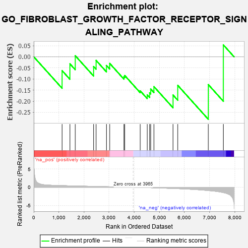
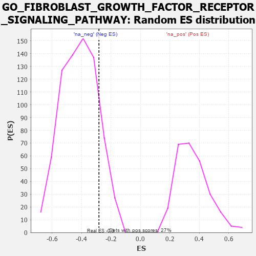

| | | Dataset | 7d |
| Phenotype | NoPhenotypeAvailable |
| Upregulated in class | na_neg |
| GeneSet | GO_FIBROBLAST_GROWTH_FACTOR_RECEPTOR_SIGNALING_PATHWAY |
| Enrichment Score (ES) | -0.28150207 |
| Normalized Enrichment Score (NES) | -0.67933154 |
| Nominal p-value | 0.8618331 |
| FDR q-value | 1.0 |
| FWER p-Value | 1.0 |
Table: GSEA Results Summary

Fig 1: Enrichment plot: GO_FIBROBLAST_GROWTH_FACTOR_RECEPTOR_SIGNALING_PATHWAY
Profile of the Running ES Score & Positions of GeneSet Members on the Rank Ordered List
| PROBE | GENE SYMBOL | GENE_TITLE | RANK IN GENE LIST | RANK METRIC SCORE | RUNNING ES | CORE ENRICHMENT | | 1 | FIBP | | | 1129 | 0.458 | -0.0624 | No |
| 2 | PTBP1 | | | 1441 | 0.402 | -0.0318 | No |
| 3 | ESRP1 | | | 1653 | 0.364 | 0.0048 | No |
| 4 | NCBP2 | | | 2383 | 0.248 | -0.0438 | No |
| 5 | FRS3 | | | 2482 | 0.229 | -0.0164 | No |
| 6 | FGFR2 | | | 2895 | 0.167 | -0.0391 | No |
| 7 | WNT4 | | | 3023 | 0.146 | -0.0298 | No |
| 8 | MAPK3 | | | 3589 | 0.062 | -0.0901 | No |
| 9 | CBL | | | 3621 | 0.056 | -0.0843 | No |
| 10 | GPC1 | | | 4238 | -0.048 | -0.1533 | No |
| 11 | NPTN | | | 4519 | -0.098 | -0.1714 | No |
| 12 | GATA3 | | | 4614 | -0.120 | -0.1624 | No |
| 13 | FGFR3 | | | 4656 | -0.129 | -0.1452 | No |
| 14 | RAB14 | | | 4784 | -0.155 | -0.1344 | No |
| 15 | FGFR1 | | | 5543 | -0.332 | -0.1721 | Yes |
| 16 | TIA1 | | | 5731 | -0.386 | -0.1286 | Yes |
| 17 | FAT4 | | | 6948 | -0.901 | -0.1252 | Yes |
| 18 | SHOC2 | | | 7546 | -1.463 | 0.0534 | Yes |
Table: GSEA details [plain text format]

Fig 2: GO_FIBROBLAST_GROWTH_FACTOR_RECEPTOR_SIGNALING_PATHWAY: Random ES distribution
Gene set null distribution of ES for GO_FIBROBLAST_GROWTH_FACTOR_RECEPTOR_SIGNALING_PATHWAY